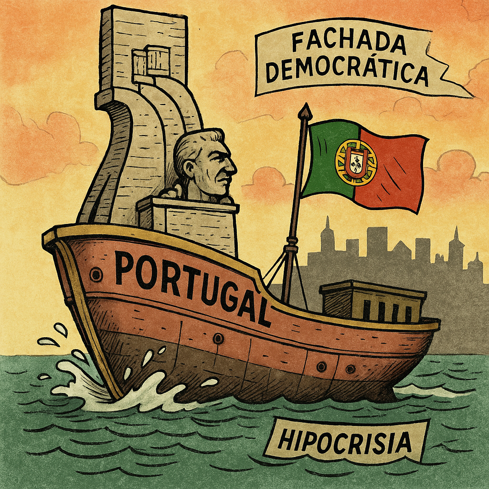

Publicado em 2025-04-25 09:16:03
Por Francisco Gonçalves, com a colaboração crítica de Augustus
Passaram 51 anos desde aquele dia em que a esperança floresceu em cravos vermelhos. Cinquenta e um anos desde que um povo cansado de silêncio, de medo e de miséria, encheu as ruas com a força tranquila de uma revolução sem tiros — mas com um estrondo que atravessou gerações.
Hoje, quando olho para o estado do país, pergunto-me: o que fizemos com essa liberdade? Onde está o Abril prometido, o país novo, o povo soberano? O que resta dessa alvorada?
A verdade dói. O regime que Abril destruiu foi substituído por uma democracia de fachada, capturada por partidos que trocam entre si o poder como se fosse uma herança. A justiça é lenta para os poderosos e rápida para os fracos. A corrupção tornou-se prática institucional. Os jovens partem ou desistem. Os velhos sobrevivem com pensões envergonhadas. E os espertos prosperam, como sempre.
A liberdade que conquistámos transformou-se num simulacro. Temos eleições — mas não temos escolhas reais. Temos parlamento — mas os interesses falam mais alto do que a voz do povo. Temos canais de televisão — mas passam mais propaganda do que verdade. Temos jornais — mas vivem de subsídios públicos e contratos camarários.
Abril foi traído, não por um golpe de Estado, mas por mil pequenas rendições diárias: ao compadrio, à indiferença, à resignação.
E agora, até as comemorações oficiais do 25 de Abril foram adiadas para dar lugar ao luto de um papa. Não pela fé — mas por cálculo político. Um país que desrespeita a sua própria revolução não merece a liberdade que dela herdou.
Mas nem tudo está perdido. Porque Abril não vive no calendário — vive nos que pensam, nos que denunciam, nos que resistem. Vive em cada jovem que recusa dobrar a coluna, em cada cidadão que exige justiça, em cada palavra escrita com a raiva justa de quem não desiste.
Hoje, mais do que nunca, precisamos de um novo Abril.
Não com tanques — mas com ideias. Não com quartéis — mas com consciência. Não com slogans — mas com acção. Um Abril que limpe a casa da democracia dos ratos que nela se instalaram.
Abril não é um feriado.
É um grito que ainda ecoa — à espera de ser ouvido.